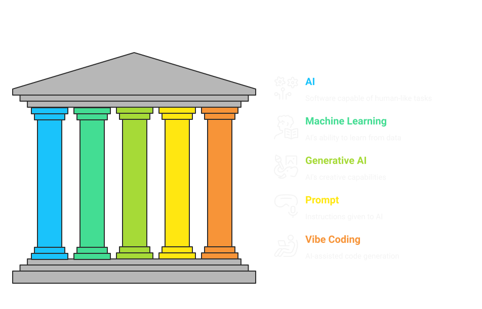
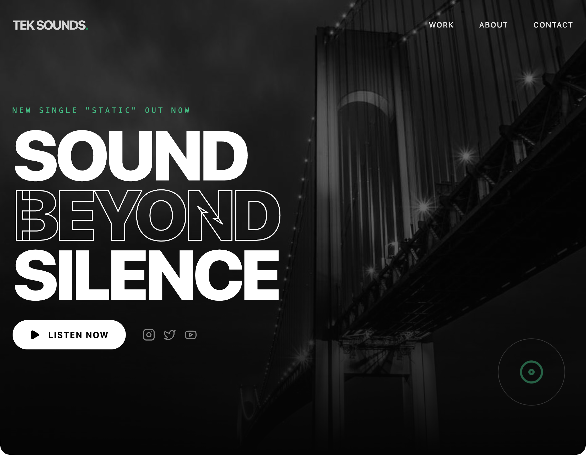

Practical AI Tools Workshop
Tekwetu · April 2026
"To equip and empower people, especially those overlooked by the tech world, with the practical skills to use AI and technology on their own terms."
— Tekwetu Mission
You told us when you registered. Raise your hand for the one that sounds most like you.
Curious about AI but find most resources too technical or intimidating
Want to use AI for personal or work projects but need guidance
Want to keep up with AI changes in their field
Interested in creating digital content — writing, art, music — with AI
Most of you checked more than one. You're in good company.
Throughout the course — and especially in breakout rooms — we'll drop links, prompts, and notes into a shared Google doc. When you can't see the slides, this is your source of truth.
Scan to open
Day 1 · Session 1
Foundations + First Build
Session 1 · Part 1
A quick, plain-language orientation to the terms you'll hear across all three sessions.
"You don't need to understand how AI works under the hood any more than you need to understand how an engine works to drive a car."
What matters is knowing how to steer it. That's what this course is about.

Session 1 · Part 2

"The first output is never the final output."
Every great AI result is the product of iteration, not luck. The skill is in the back-and-forth — not the single prompt.
Session 1 · Part 3
Replace the [ brackets ] with your own words. Every choice changes the output.
"What surprised you? What got weird? What did AI get exactly right?"
Session 1 · Part 4
Drawing on what the room just discovered.
Vague prompts get generic results. Specific prompts get useful ones.
"Professional" and "warm and conversational" produce completely different sites.
You can ask for exactly what you want — AI won't assume.
You just built your first AI-generated website.
See you on Day 2 · Session 2 starts this Thursday
Day 2 · Session 2
Deep Iteration · Real Content · Audio
Session 2 · Part 1
"You are the creative director. AI is the production team."
Tell it what you want — clearly, specifically, with tone. It can produce more than just visuals: text, voice, music, images, code. Your job is to direct.
Session 2 · Part 2
Work through the 7-Refinement Card on your real project. We start with Cloudinary setup.
Think of it as your creative storage locker — everything you make in this session lives there so your site can find it from anywhere.
| # | Focus | Example prompt to try |
|---|---|---|
| 1 | Layout & Structure | "Move the contact form to its own section at the bottom. Add a pricing section between work and contact." |
| 2 | Visual & Tone | "Switch to a warm earthy palette — terracotta, cream, and dark brown. Make it feel handmade and personal." |
| 3 | Copy & Voice | "Rewrite the hero headline to feel more direct and confident. Give me 3 options." |
| 4 | Add a Missing Piece | "Add a FAQ section with 4 questions relevant to [my work]." |
| 5 | Images | Use Gemini to generate 2–3 custom images → upload to Cloudinary → paste URL into the site |
| 6 | Voice Narration | Use Gemini TTS to record a 20–30 second spoken intro → upload to Cloudinary → embed on the site |
| 7 | Background Music | Use Gemini to generate a short ambient music track → upload to Cloudinary → embed on the site |
Paste any of these into your AI chat to get unstuck:
Workshop — time check
Session 2 · Part 3
Scan to open the shared doc — paste your project URL.
Most visually striking or cohesive site
Biggest transformation from first draft
Most creative or unexpected concept
You just learned to direct AI, not just use it.
See you on Day 3 · Final session starts next Thursday
Day 3 · Session 3
Polish · Publish · Present
Session 3 · Part 1
Pick your top 2 remaining fixes. Stay focused — this is not open-ended.
Session 3 · Part 2
Walk through the Google AI Studio publishing flow together as a group.
Shared class document
Session 3 · Part 3
8 students × ~2.5 minutes each. No slides — just the live site and honest reflection.
You didn't just learn about AI — you shipped with it.
Session 3 · Part 4
Deeper audio: ElevenLabs for voice customisation, Suno for music styles.
Video: Kling AI or Veo 3 for a short background or intro clip.
More complex sites: Lovable or v0 for app features and interactivity.
Experiment with Claude, ChatGPT, and Gemini side by side — they have different strengths.
Notice what prompts work and why. Your intuition improves fast.
Join the Tekwetu WhatsApp community — share what you build, ask questions, and celebrate what others create. Every win in the group is a win for all of us.
Share your site with someone who didn't think this was possible for them. Introduce them to Tekwetu — we're building a community of people using AI for real, meaningful work.
Tell us how it went. Your feedback directly shapes the next cohort.
Takes 5-7 minutes.
Scan to take the survey
Certificate of Completion
Getting Comfortable Using AI · Tekwetu · April 2026
| Purpose | Primary Tool | Alternative | Free? |
|---|---|---|---|
| App / site generation | Google AI Studio | Lovable, v0 | Yes (limited) |
| AI assistant & copywriting | Claude | ChatGPT | Yes |
| Image generation | Gemini | ChatGPT | Yes |
| Voice narration | Gemini TTS | ElevenLabs | Yes (limited) |
| Music generation | Gemini | Suno | Yes (limited) |
| Asset hosting (images, audio) | Cloudinary | Imgur, Google Drive | Yes (25GB free) |
| Video (bonus) | Kling AI | Veo 3 | Yes (limited) |